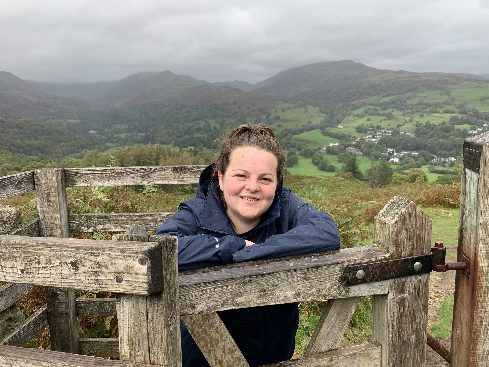

Hello, welcome to my first web page.
Currently I am enrolled on a Level 4 Software Development Apprenticeship, and decided to create a web page about myself and my engineering career so far to practice my learnings. You know the saying practice makes perfect.
About me
I recently changes careers to become a Software Enginer. Something which I always had a interest in but never had any opportunties for whilst study at school and college.
I made the brave decision to apply for a bootcamp for people who had no prior experience in software engineering which would teach the basics enough to gain a entry level role in a company.
Fast forward to nearly two years later and I know can proudly (sometimes can't believe it) say I work at the BBC in Voice + AI creating the BBC's first Voice Assitance called Beeb.
I love wakling and getting in the outdoors. My picture is actually taken in the Lake District on the decline for Loughrigg Fell. My favourite walk in Ambleside.
Carry on reading to find out more about me, a list of my favourite programming languages, my favourite food ranked in order and some links to some repo's for my mpost recent work.
Programming Languages
A unorderd list of programming langauges I am learning currently and some which I would like to learn
- TypeScript
- JavaScript
- HTML5
- CSS
- Java
- Python
There are many programming languages, above are just some of the ones on the top of my list.
Favourite Foods
I am a big foodie I love a range of cuisines (except) Sushi. However recently I have just found out I am allergic to cereals containing gluten which has a big impact on what I can, not a lot and can not eat. Below are my five favourite cuisines ordered 1 - 5 before Coeliac diagnosis.
- Chinese
- American
- Turkish
- Indian
- Italian
Projects from my Apprenticeship
Below are some of the projects I have worked on during the first stage of the apprenticeship bootcamp.
- dynamite-js
-
The goal of the project was to create a AI bot to compete with class mates in a game of ROCK,PAPER,SCISSORS.
- busboard
-
The goal of the project was to display the next five bus arrivals for the next nearest two bus stops for a given postcode on a web page.
- email extraction
-
The goal of the project was to display a total count of user for a certain email address
Click here to head to my github profile